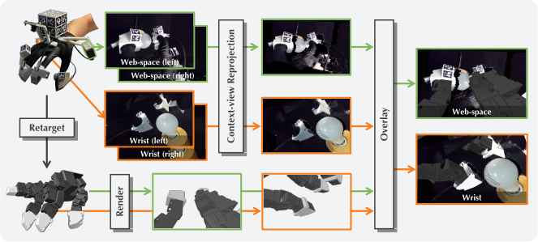
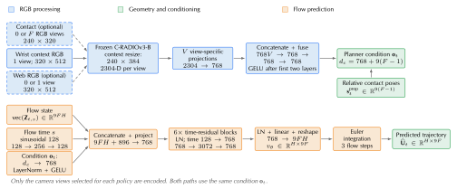
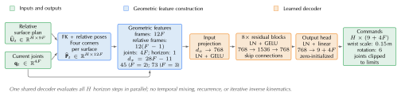

Contact-surface retargeting
CIMI optimizes wrist and finger motion together to match the demonstrated contact positions and orientations. Releasing the context-camera constraint lets the wrist move to improve contact alignment.
Transferring Dexterous Skills by Showing How Contact Unfolds
Anonymous project page · under review
CIMI transfers dexterous skills from human demonstrations to robot hands through shared contact surfaces and camera observations.

The video presents the interface, task demonstrations, and evaluation. Select play to start.
CIMI collects human demonstrations, converts them into robot training data, and learns a policy that plans contact motion for robot execution.

Select a stage to view its inputs, processing, and outputs.
Matching fingertip modules provide the human and robot with the same contact geometry and local camera views. Wrist and web-space cameras record the surrounding scene while the demonstrator performs the task.
The interface records nine synchronized streams at 10 Hz: three contact views, four context views, and two tracking views.
Fiducial tracking recovers contact-surface poses from the recordings. Human and robot hands have different kinematics, so holding the robot wrist at the human camera pose can prevent the fingertips from reaching the demonstrated contact positions.
CIMI optimizes wrist and finger motion together to match the demonstrated contact positions and orientations. Releasing the context-camera constraint lets the wrist move to improve contact alignment.
The retargeted wrist motion changes the camera pose. CIMI reprojects the human context images to that viewpoint and overlays the robot geometry. Contact-camera views are retained.

The planner and controller are trained separately. The controller remains fixed during planner training.
A frozen C-RADIOv3-B encoder processes the selected RGB views. View-specific projections and a fusion network combine the visual features with inter-finger contact poses. A conditional flow network with six residual blocks predicts a 16-step contact-surface trajectory.

The controller constructs geometric features from contact-surface targets and current joints. An eight-block residual MLP predicts wrist and finger commands for all horizon steps in parallel. Training uses augmented motion trajectories, an initial action-regression phase, and a contact-corner loss with action regularization.

At execution time, the planner receives the robot’s current camera views and proprioceptive state. It predicts contact-surface trajectories, and the controller converts them into coordinated wrist poses and finger-joint targets.
The robot executes the first eight steps of the 16-step prediction, receives new observations, and replans.
Each video pairs a human demonstration with a learned LEAP policy rollout, including third-person, contact-camera, and context-camera views.
Four comparisons examine transfer across hands, contact-camera inputs, action representation, and contact alignment. Mean final-stage success is measured across six hand–task pairs, with 20 trials per pair for each method.
Select an observation to view its comparison.
The same right-hand human demonstrations train policies for the right LEAP hand and left Wuji hand. Final-stage success is 75% and 70% for cube picking, and 85% for both hands on coin picking.
With contact-surface actions held fixed, adding contact cameras raises mean final-stage success from 1.7% to 80.8%. The examples compare context-only inputs with context and contact inputs.
With the same visual inputs, predicting contact-surface trajectories raises mean final-stage success from 30.8% to 80.8% compared with direct wrist–joint prediction.
Releasing the context-camera constraint reduces mean coin contact-corner error from 14.67 to 0.51 mm. Coin lift success increases from 0% to 85%, and bulb lighting success from 0% to 90%. Both variants use corner matching.
Robot-free human demonstrations offer a promising route to scaling dexterous manipulation data. The key challenge is to preserve the demonstrator’s natural dexterity while producing contact-grounded observations and actions that transfer to robot hands. We present Contact Imitation Interface (CIMI), a framework with contact-grounded demonstration and learning interfaces. The demonstration interface combines shared contact geometry and fingertip RGB views with contact-alignment-first retargeting and reprojection of wider scene views. The learning interface introduces a hierarchical policy in which a contact-surface planner predicts relative contact-surface trajectories and a controller coordinates wrist and finger commands to improve contact alignment. CIMI combines contact-grounded observations, retargeting, and action representations, improving mean final-stage success by at least 50 percentage points over baseline policies across six hand–task pairs on LEAP and Wuji. Both the hardware designs and software will be publicly available.
The PDF provides hardware and fabrication details, implementation settings, and policy camera inputs. The paper, code, and citation will follow after review.